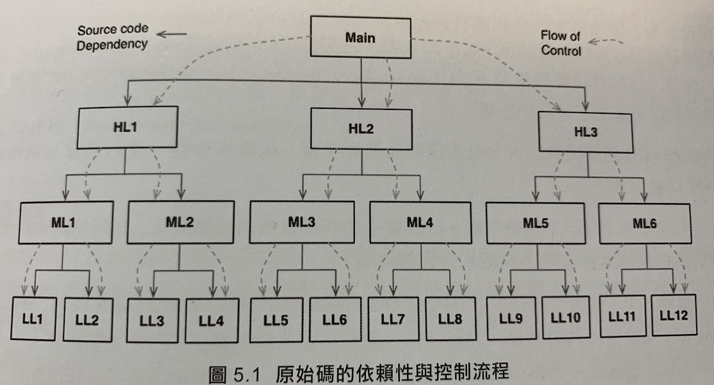

物件導向程式設計
物件導向(OO)什麼？
封裝 (encapsulation)、繼承 (inheritance) 和多型 (polymorphism) 這三件事情以適當的方式合成的產物，或者至少 OO 語言必須支援這三件事
封裝
C 語言中也有完美的封裝。
point.h
1 | struct Point; |
point.h 的使用者無權存取 struct Point 的成員，但是他們可以呼叫兩個函式做事情，完全不知道內部實作或成員。
C++ 形式的 OO 出現之後，C 的完美封裝就被破壞了。
(因為 C++ 編譯器需要知道每一個類別的實例所佔記憶體的大小)
1 | class Point { |
藉由使用 public / private / protected 等等關鍵字去修復這個封裝。
Java 和 C# 廢除了標頭和實作的拆分，也因此更弱化了封裝。
事實上，許多物件導向語言很少或根本沒有強制性封裝。
依賴於一個前提：
程式設計師必須具備「不會設法迴避資料封裝」的相關良好行為。
過去被嚴格限制的行為又被解放了 (誤) XD?!
繼承
繼承就是在一個封閉範圍內重新宣告一組變數和函式。
而這是 C 程式設計師在 OO 語言之前就能手動完成的事。
嘲諷！
在物件導向出現之前，利用結構在記憶體資料欄位的前後順序來「欺騙」電腦，是一種慣用手法 (事實上現在依然如此)。
可以說，在 OO 語言發明之前，就已經有一種繼承了。雖然 OO 沒有帶來新的東西，但是他確實使資料結構的偽裝變得更方便。
多型
在 C 語言中，過去會利用一個結構包含函式指標，來達成多型的功能，也是物件導向裡所有多型的基礎。
1 | struct FILE { |
所以去實作這幾個 function 然後產生一個 FILE 的物件，就可以讓流程中要使用時，指向這個物件，而再指到最後實作的 function。
而 C++ 中 類別裡的每個虛擬函式都會在一個 vtable 的表格中。
自從 1940 後，程式設計師一直在使用函式指標來實現多型行為。
OO 語言可能沒有給我們帶來多型，但是使得多型更安全方便。
OO 在間接控制轉移上加上了規範。(如同第三章提到的)
多型的威力 / 依賴反轉
很強…
我們的程式應該要獨立於設備，我們編寫了很多依賴於設備的程式之後，發現其實是希望那些程式做相同的工作，只是用於不同的設備。
但是這點也是目前我被其他人詬病的一點，認為 app 不應該將關係搞得那麼複雜。但我始終認為，這不是複雜，而是將物件弄得更簡單，關係弄得更清楚！
在典型的 calling tree 中，主函式呼叫高層級函式，高層級函式呼叫中層級函式…

造成軟體架構師的選擇變得很少，流程控制是由系統行為決定的，而原始碼依賴性又是由流程控制決定的。
但當多型發揮作用時，就能出現許多可能！若以 OO 語言編寫的系統，就能絕對控制 (absolute control) 系統中所有原始碼依賴的方向。
當元件中的原始碼發生變化時，只有該元件需要進行重新部署，這就是可獨立部署性 (independent deployability)
如果系統中的模組可以獨立部署，那麼就可以由不同的團隊來獨立開發。這就是可獨立開發性 (independent developability)
對於軟體架構師來說：
OO 是透過使用多型，來獲得對於系統中每個原始碼依賴方向的絕對控制力。
它允許架構師建立一個 plugin 的架構，把商業策略的高層級模組獨立於實作細節的低層級模組。
最近同事跟我分享他看到我的 PR 的觀點，如果照著依賴反轉的原則去寫作，閱讀當下，想要去深究「實作者」是誰時，則會造成閱讀尋找的困擾。這點我聽完之後我還蠻認同的，一方面是我的程式碼的命名很弱，如果要提高介面的辨識度，相對命名可能會是一個重點，過去沒有很認真在「協助他人理解」這一塊上面ＱＱ